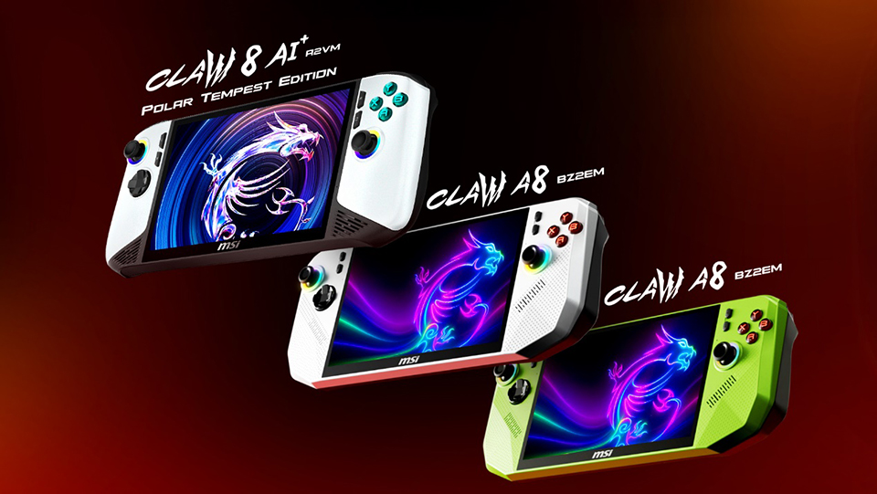
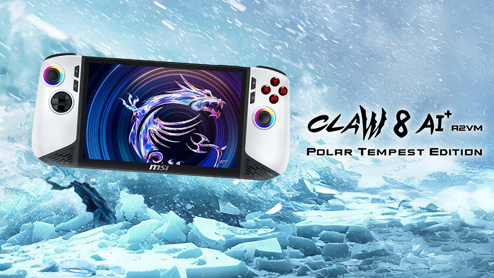

ចេញផ្សាយ៖ 29/07/2025
កាលពីជំនាន់ដំបូង MSI បានបញ្ចេញ Claw 8 AI+ ដែលបំពាក់ជាមួយតែជំរើស Chip Intel តែប៉ុន្នោះ។ ប៉ុន្តែកាល់ពីព្រឹត្តិការណ៏ Computex 2025 ក្នុងទីក្រុងតៃប៉ិក តៃវ៉ាន់ MSI បានប្រកាសចេញ Claw A8 ជាមួយជំរើស Chip Intel និង AMD Ryzen 2 Extreme ដែលប្រិយមិត្តជាច្រើនកំពុងទន្ទឹងរង់ចាំយូរមកហើយ។ Claw A8 គឺជាម៉ាស៊ីនលេងហ្គេមកាន់ដៃដែលមានសមត្ថភាពខ្ពស់ និងមានការរចនាដែលទាក់ទាញ។ ដោយបន្ទះ Chip AMD Ryzen 2 Extreme នេះផ្តល់នូវសមត្ថភាពដំណើរការខ្ពស់ និងអាចដំណើរការហ្គេមទាំងអស់បានយ៉ាងរលូន។
MSI បានបញ្ចេញ Claw ដល់ទៅ 3 ម៉ូដែល ដូចជា Claw 8 AI+ A2VM, Polar Tempest Edition A2VM និង Claw A8 BZ2EM ដែលប្រើប្រាស់ Chip AMD Ryzen 2 Extreme។
ក្រុមហ៊ុន MSI មិនទាន់និងបញ្ជាក់ថាចេញលក់នៅថ្ងៃណានោះទេ ហើយចំពោះតម្លៃក៏មិនទាន់និងប្រកាសផងដែរ។ ពួកយើងនិងរៀបរាប់លក្ខណៈសម្បតិ្តម្ដងទៀតនៅពេលដែលក្រុមហ៊ុននេះបញ្ចេញជាផ្លូវការ។